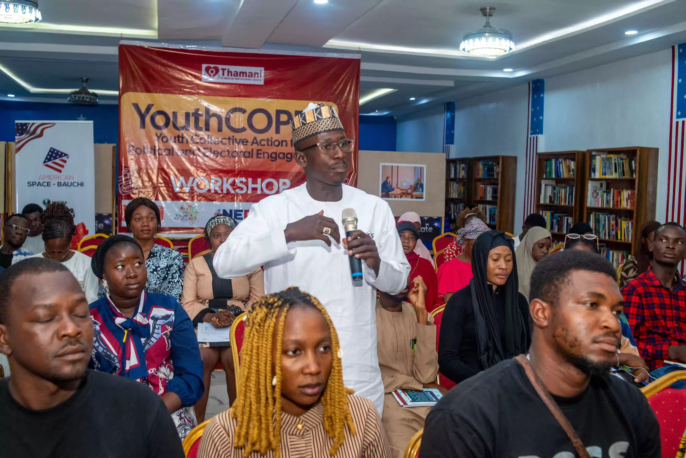
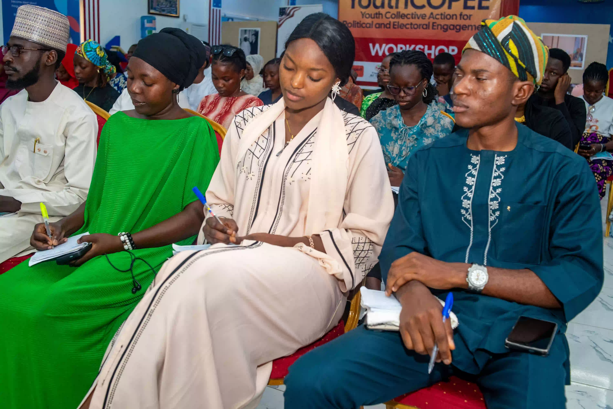

Women, Gender Justice & Protection
Advancing women’s rights, protection, gender justice and stronger community response systems.
Learn more ↗THAMANI FOR WOMEN & YOUTH DEVELOPMENT INITIATIVE
We cultivate human potential, strengthen systems and empower communities across Northern Nigeria to lead sustainable change.

WHO WE ARE
THAMANI is a Nigerian, grassroots-focused NGO advancing women and youth inclusion, leadership, civic participation, peacebuilding and community development.
Established in 2020 and CAC-registered in 2023, we work across Northern Nigeria with communities and partners to build locally owned, inclusive and sustainable solutions.
Discover our story →OUR FOCUS AREAS
Our six interconnected thematic areas strengthen rights, participation, peace, education, economic resilience and accountable communities.
Advancing women’s rights, protection, gender justice and stronger community response systems.
Learn more ↗Building young leaders and expanding meaningful participation in civic and democratic processes.
Learn more ↗Strengthening dialogue, freedom of religion or belief, peaceful coexistence and community cohesion.
Learn more ↗Supporting inclusive education, child protection and safer learning environments for every learner.
Learn more ↗Expanding savings, livelihoods, economic opportunities and resilience for women and communities.
Learn more ↗Using advocacy, digital platforms and citizen engagement to strengthen accountability and influence policy.
Learn more ↗OUR IMPACT
We transform ideas into action by empowering women, young people and communities to become active drivers of sustainable development.
FEATURED PROGRAMMES
Through partnerships, evidence based advocacy and grassroots
engagement, THAMANI works to strengthen communities across
Northern Nigeria.
Youth Collective Action for Political and Electoral Engagement, building a new generation of civic leaders.
Explore programme ↗Strengthening youth networks, dialogue and positive narratives for peaceful coexistence.
Explore programme ↗Supporting safe, inclusive and violence free learning environments through civic advocacy and local engagement.
Explore programme ↗Strengthening community responses to GBV while supporting women's economic empowerment and collective action.
Explore programme ↗
A STORY OF CHANGE
Through the #HerVoice Project, THAMANI strengthened community responses to gender-based violence in Dass LGA, Bauchi State.
The work brought together women leaders, fathers, community structures, government institutions and development partners to strengthen response, accountability and survivor support.
Read the story ↗PARTNERS & COLLABORATIONS
GET INVOLVED
Volunteer, partner with us, support a specific area of our work or make a general donation to help build more peaceful, inclusive and resilient communities.
RESOURCES
A policy brief focused on Dass LGA, Bauchi State, examining GBV, community development and health extension services.
Open policy brief →Explore activities, outcomes and lessons from THAMANI's Youth Collective Action for Political and Electoral Engagement initiative.
Open project report →A policy brief advocating safer, more secure and violence-free schools across Bauchi, Borno and Yobe States.
Open policy brief →